Nara Organics
Designing a baby & mom tracking app from 0 → 1
Throughout an eight-year engagement, I led UX & product design for Nara, partnering closely with the founder to create a simpler, more intuitive baby tracking experience for new parents. As the product evolved, I led a small team of designers and a UX researcher while extending the experience to support pregnancy, postpartum, and Apple Watch app. Today, the app has a 4.9-star App Store rating and more than 25,000 reviews.
Nov 2018 – Jun 2026
Engagement
0
1
Product design
4.9
App store rating
25,000+
Parent reviews
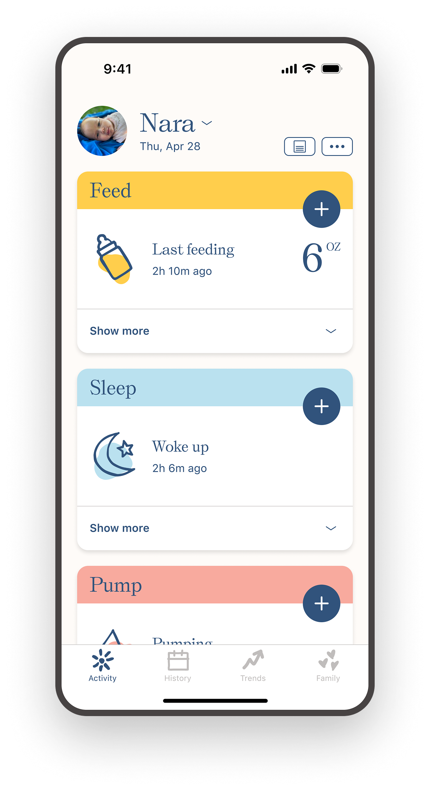
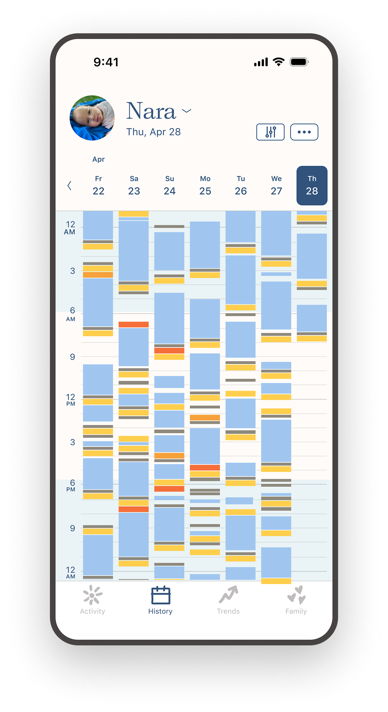
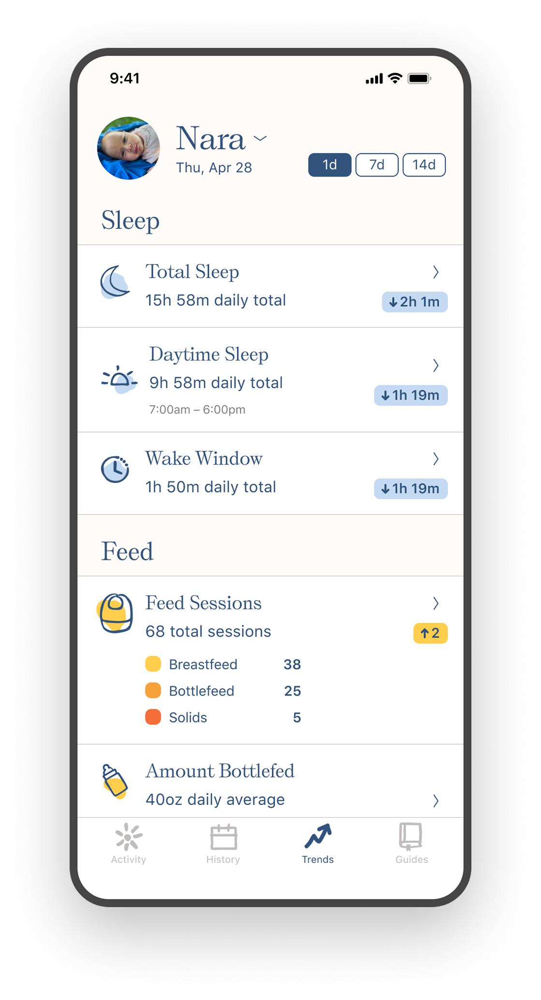

A simple onboarding allows the user to immediately start tracking.
Designed for use in the middle of the night
UX research told us parents needed one place to log everything and share it with another caregiver, a partner, a grandparent, a night nurse. And it had to work at 3am, so the bar for ease of use was high.
I designed a reorderable card structure where each activity type gets its own card. Buttons are large, common fields pre-fill from the last entry, and timers start with one tap. Dark mode has a custom schedule separate from the system setting, that is based on the baby's nighttime hours. And, the UI is fully shareable with another caregiver.
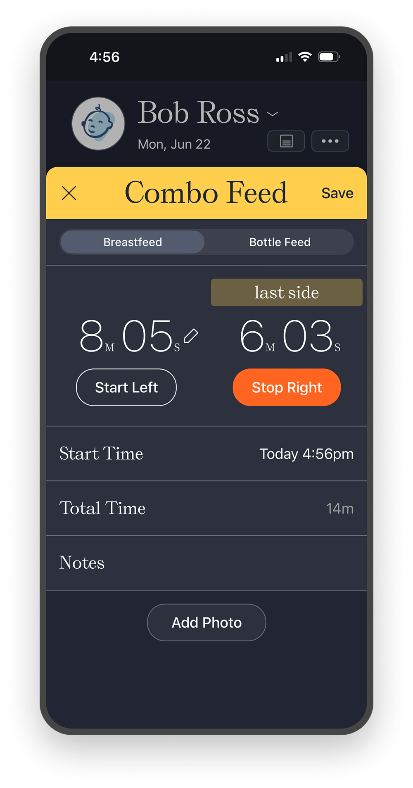
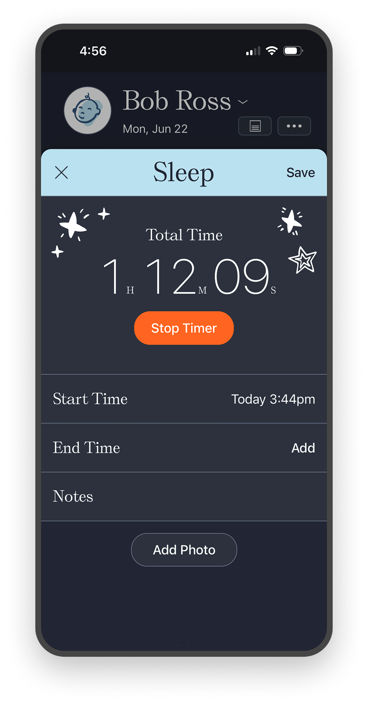
Every entry at a glance
I designed the history tab to give parents a full picture of everything tracked, so they can start making correlations: Does the baby sleep longer after a bigger feeding? When was the last diaper change? Each activity column has a detail view showing totals for that day and every logged entry with timestamps and notes.
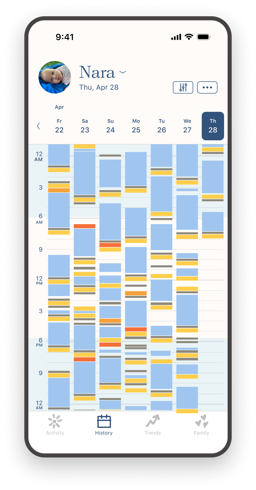
Data that answers questions
Complementing the history tab, the app surfaces trends based on what the user tracks and when. Rather than chronological timeline, trends takes the tracked information, time of day input, and answers real questions.
A parent can see everything from total minutes of nighttime sleep per day, ounces from bottle feedings over the past week, even total diapers. Each trend detail allows the parent to see the data in three views: a calendar, a graph, and a list of entries. The trends section is calibrated to the questions parents actually asked for via inbound CX.
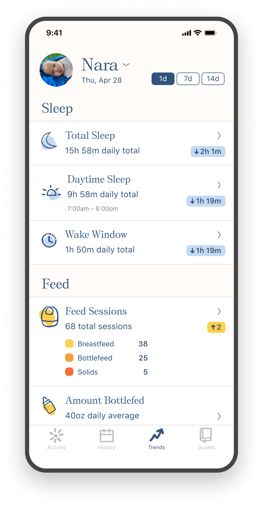
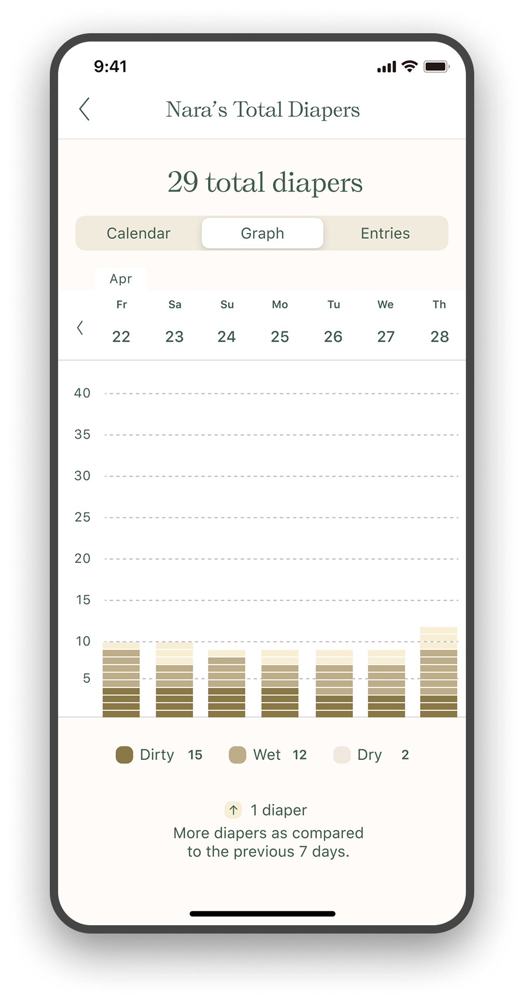
Designed for when you don't have your phone
Parents wanted a way to log an activity without unlocking their phone, which makes sense if you've ever tried to operate a touchscreen while holding a newborn. Based on that feedback, I extended the phone experience to an Apple Watch app design. The watch app allows parents to easily record all of tracking categories.
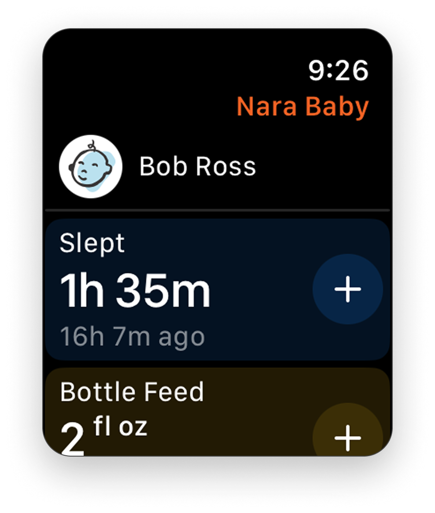
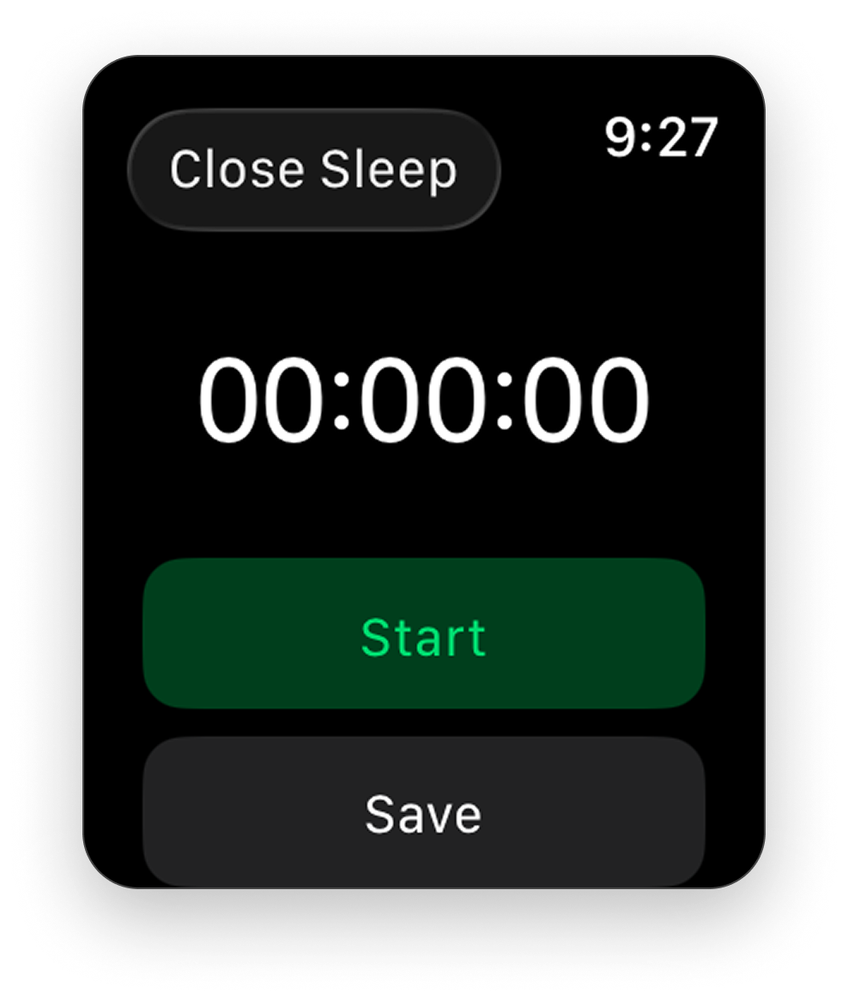
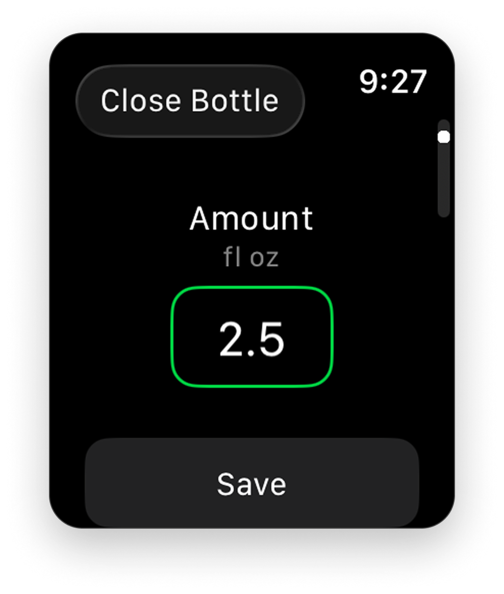
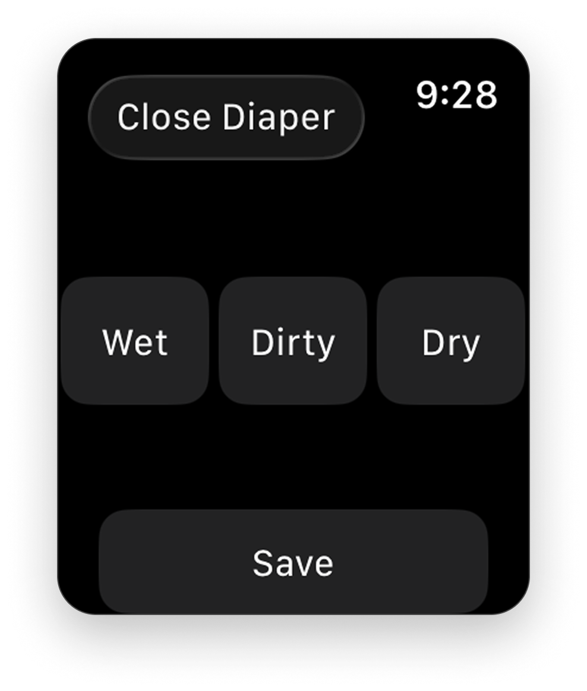